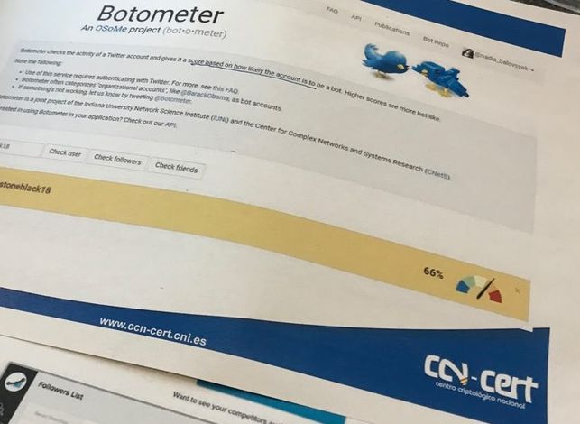

|

|
Si tiene muchos seguidores falsos, desconfía. Puede que no parezca un método demasiado sofisticado, pero es el que recomiendan los espías españoles para analizar las redes sociales y detectar posibles mentiras y campañas de desinformación.
| eso, detectar cuántos usuarios que siguen a una determinada cuenta son reales y qué porcentaje de ellos son bots, es justo lo que hacen las seis herramientas que ha aconsejado este viernes el director del Centro Nacional de Inteligencia (CNI), Félix Sanz Roldán, en un coloquio organizado al cierre de la XVI Jornada de Periodismo Coca Cola, cuyo tema ha sido "¿Quién paga la mentira?, ¿es de pago la verdad?".
Todas son herramientas muy básicas que analizan a un determinado usuario o a sus seguidores en busca de patrones que indiquen que puede ser una máquina y no un humano quien esté detrás de su avatar. Sus veredictos no deben ser tomados al pie de la letra, pero pueden ser una buena manera de orientarse.
La mayoría permiten algunas consultas gratuitas, pero atención: alguna de ellas pide algunos permisos para utilizar tu cuenta (como realizar comentarios automáticos en tu nombre) para conceder acceso a sus servicios que podrían entenderse como excesivos. Sin más dilación, estas son las herramientas que recomienda el CNI para buscar mentiras en las redes sociales:
|